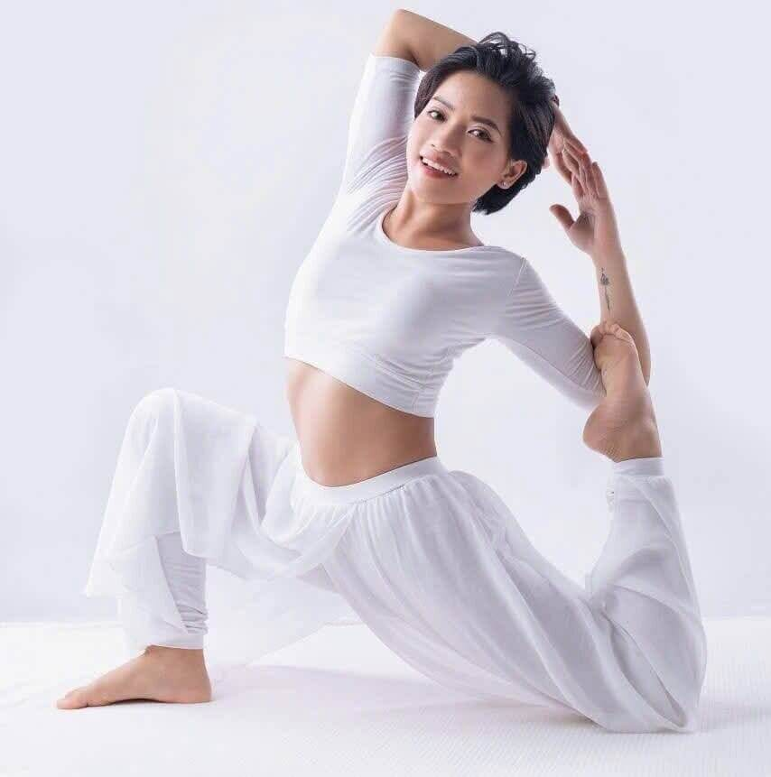

Yoga người lớn · Chăm sóc sức khỏe chủ động
Ứng dụng yoga cân bằng phục hồi cho tuổi tiền mãn kinh và mãn kinh
Bốc hỏa, mất ngủ, xương mỏng dần, tâm trạng lên xuống. Cơ thể đang đổi gì, và vì sao điều giúp được nhiều nhất không nằm ở một tư thế, mà ở cả cách mình thở, ngủ, ăn, vận động và nghĩ về chặng đường này.
“Cô ơi, tự nhiên em nóng bừng lên giữa lớp, mặt đỏ ửng, ngại quá.”
“Đêm nào em cũng tỉnh lúc ba giờ sáng. Rồi nằm đó nghĩ đủ thứ.”
“Em dễ cáu lắm. Chồng con nói gì cũng thấy khó chịu. Xong lại thương, lại tủi.”
Những câu này cô nghe nhiều ở các chị ngoài bốn mươi. Nói nhỏ thôi, sau giờ tập, khi lớp đã về gần hết. Như thể đó là chuyện riêng phải giấu.
Không phải giấu. Đây là một chặng tự nhiên của người phụ nữ. Chặng này có thể đi qua nhẹ nhàng hơn nhiều.
Bài Ứng dụng yoga cân bằng phục hồi cho phụ nữ đã nói về chu kỳ kinh, mang bầu và sau sinh. Bài này đi tiếp chặng sau: những năm kinh nguyệt bắt đầu thưa dần, rồi dừng hẳn. Sophia không đưa ra “bài tập chữa bốc hỏa”. Cô muốn cùng nhìn cả lối sống trên năm thể: thân, khí, tâm, trí và tinh thần. Tư thế là một phần trong đó. Một phần thôi.
Và yoga đi cùng bác sĩ, không đi thay. Chị nào đang dùng thuốc, nội tiết hay thuốc xương, cứ dùng đúng như bác sĩ dặn.

- Chặng nào?
- Cơ thể nói gì
- Năm thể
- Bốc hỏa
- Giấc ngủ
- Xương
- Tâm trạng
- 9 tư thế + video
- Nên tránh
- Khi nào đi khám
Mình đang ở chặng nào?
Mãn kinh là khi đã tròn 12 tháng liền không có kinh, không vì mang thai hay bệnh gì khác. Phần lớn phụ nữ đến mốc này trong khoảng 45 đến 55 tuổi (Tổ chức Y tế Thế giới). Vài năm trước đó là quanh mãn kinh, hay tiền mãn kinh: kinh lúc sớm lúc muộn, lúc nhiều lúc ít, và những thay đổi bắt đầu lộ ra. Chặng này có người kéo dài hai năm, có người tám, chín năm.
Kéo thanh trượt bên dưới để xem estrogen thường đi thế nào theo tuổi. Đây là đường minh họa cho dễ hình dung, không phải số đo của riêng ai.
47 tuổi
Cái làm mình mệt nhiều khi không phải estrogen thấp. Mà là nó chập chờn. Tháng này lên cao, tháng sau tụt xuống. Cơ thể chưa kịp quen thì đã đổi. Đến khi đã qua mãn kinh vài năm, hormone ở yên một mức thấp, nhiều chị thấy người dễ chịu hơn hẳn. Về các tuyến nội tiết và hormone, có bài Các tuyến nội tiết và yoga.
Cơ thể nói gì trong chặng này
Không phải ai cũng gặp hết. Có chị gần như không thấy gì. Có chị thấy cả một lúc.
🔥
Bốc hỏa, đổ mồ hôi đêm
Một luồng nóng chạy từ ngực lên mặt, đỏ bừng, vã mồ hôi, rồi lại hơi lạnh. Có người vài lần một tuần, có người chục lần một ngày. Ban đêm thì thành mồ hôi ướt gối.
🌙
Khó ngủ, hay tỉnh giữa đêm
Không hẳn mất ngủ hoàn toàn. Hay là 2, 3 giờ sáng tự nhiên tỉnh, người nóng, đầu bắt đầu nghĩ. Rồi khó ngủ lại.
🌊
Tâm trạng chòng chành
Dễ cáu, dễ tủi, tự nhiên muốn khóc. Nhiều chị kể: “Em thấy mình không còn là mình nữa.”
🦴
Xương và khớp
Mỏi khớp, cứng người buổi sáng. Còn xương thì mỏng đi lặng lẽ, không đau gì, cho đến một ngày ngã nhẹ mà gãy.
💗
Tim và chuyển hóa
Vòng eo to ra dù ăn như cũ. Huyết áp, mỡ máu nhích lên. Có lúc tim đập nhanh, hồi hộp.
🌸
Vùng kín và sàn chậu
Khô, rát, đau khi gần gũi. Ho, hắt hơi, cười to thì rỉ nước tiểu. Chuyện ít ai nói, mà rất nhiều người gặp.
Trong nghiên cứu SWAN theo dõi hơn 1.400 phụ nữ Mỹ nhiều sắc tộc, bốc hỏa và đổ mồ hôi đêm thường kéo dài trung bình khoảng 7,4 năm (Avis và cộng sự, JAMA Internal Medicine, 2015). Vì vậy cô nghĩ, thay vì chờ “qua cơn này là xong”, mình nên học cách sống thật dễ chịu cùng nó.
Cân bằng lại trên cả năm thể
Theo yoga, con người có năm lớp: thân, khí, tâm, trí, và phần tinh thần sâu nhất (bài Năm thể của con người kể kỹ hơn). Mãn kinh nghe như chuyện hormone, chuyện của thân. Nhưng ai đi qua rồi đều biết, nó chạm vào cả cách mình nhìn chính mình.
🌿 Thân
Cho xương và cơ chịu lực mỗi ngày. Đi bộ, tư thế đứng, tập sức mạnh nhẹ. Ăn đủ đạm, đủ canxi, ra nắng.
🌬️ Khí
Thở chậm, thở ra dài, thở mát. Hơi thở là thứ mình mang theo khắp nơi, kể cả lúc cơn nóng đến giữa cuộc họp.
💗 Tâm
Cho phép mình cáu, mình buồn, mà không trách mình. Nói ra với người thân. Cảm xúc được gọi tên thì nhẹ đi một nửa.
🧠 Trí
Đổi câu “mình già rồi” thành “mình đang sang một chặng mới”. Đổi “phải chịu thôi” thành “mình có nhiều cách để dễ chịu hơn”.
✨ Tinh thần
Những năm này là lúc nhìn lại. Mình đã sống cho ai, giờ muốn sống thế nào. Nhiều chị bắt đầu thiền, bắt đầu học, từ đây.
Bác sĩ Christiane Northrup, trong cuốn The Wisdom of Menopause (Sự khôn ngoan của tuổi mãn kinh, 2001), gọi chặng này là lúc người phụ nữ được mời quay về lắng nghe chính mình sau nhiều năm lo cho người khác. Cô thấy điều đó đúng với rất nhiều học viên của cô.
Khi cơn nóng bừng đến
Bốc hỏa là khi “bộ điều nhiệt” trong não, ở vùng dưới đồi, trở nên nhạy hơn lúc estrogen chập chờn. Một chút nóng thôi mà nó tưởng cơ thể quá nóng. Thế là mạch máu ngoài da giãn ra, tim đập nhanh, mồ hôi vã ra để tản nhiệt. Vài phút sau thì qua.
Cô chia sẻ thật: yoga không làm cơn nóng biến mất. Nhưng nó giúp mình chịu đựng nhẹ hơn, ngủ tốt hơn, và bớt hoảng mỗi khi cơn nóng đến. Mà hoảng thì cơn nóng thường dài hơn.
Một tổng quan 13 thử nghiệm với hơn 1.300 phụ nữ cho thấy yoga giúp giảm các triệu chứng mãn kinh nói chung, cả về tâm lý, cơ thể và bốc hỏa, so với không tập (Cramer, Peng và Lauche, Maturitas, 2018).
Nhưng trong thử nghiệm MsFLASH có 249 phụ nữ, 12 tuần yoga không làm số cơn bốc hỏa giảm rõ so với nhóm không tập. Điều cải thiện là giấc ngủ: các chị tập yoga bớt mất ngủ hơn (Newton và cộng sự, Menopause, 2014).
Với thở chậm, một nghiên cứu nhỏ thấy số cơn nóng giảm (Freedman và Woodward, American Journal of Obstetrics and Gynecology, 1992). Một nghiên cứu lớn hơn sau này thì không thấy khác biệt rõ (Carpenter và cộng sự, Menopause, 2013). Cô vẫn thở chậm khi cơn nóng đến. Không phải để đuổi nó đi. Để mình không gồng lên theo nó.
Thở dịu cơn nóng cùng cô
Hít vào 4 nhịp, thở ra 6 nhịp. Ai quen thở làm mát thì hít vào qua lưỡi cuộn tròn hoặc qua kẽ răng, thở ra bằng mũi (xem bài Thở làm mát Sitali). Không quen thì cứ thở bằng mũi, chỉ cần hơi thở ra dài hơn hơi hít vào.
Bấm bắt đầu khi cảm thấy cơn nóng đến, hoặc mỗi tối trước khi ngủ.
Điều gì hay gọi cơn nóng đến?
Đánh dấu những điều mình thấy đúng. Mỗi điều sẽ hiện một gợi ý nhỏ.
Ở phụ nữ thừa cân có bốc hỏa, những chị giảm được cân nhờ đổi lối sống thì bốc hỏa cũng cải thiện nhiều hơn (Huang và cộng sự, Archives of Internal Medicine, 2010). Lại là câu chuyện lối sống, không phải một mẹo riêng lẻ.
Giấc ngủ: tỉnh lúc ba giờ sáng
Đổ mồ hôi đêm làm mình tỉnh. Tỉnh rồi thì đầu bắt đầu nghĩ. Nghĩ thì tim đập nhanh, người nóng lên. Một vòng tròn như thế.
Những điều cô thấy giúp được nhiều chị: phòng ngủ mát, chăn mỏng, đồ ngủ cotton. Một cốc nước để đầu giường. Ăn tối sớm, không rượu buổi tối. Tắt màn hình trước giờ ngủ. Và khi tỉnh giữa đêm, đừng vội cầm điện thoại. Nằm yên, đặt tay lên bụng, thở ra dài vài hơi. Không cố ngủ. Chỉ nghỉ.
Bướm nằm có kê gối và gác chân lên tường ở phần tư thế là hai tư thế cô hay gợi ý trước giờ ngủ. Bài Ứng dụng yoga cân bằng phục hồi cho giấc ngủ có thêm nhiều cách nữa.
Xương: chuyện lặng lẽ nhất
Estrogen giúp giữ cân bằng giữa việc xây xương và việc hủy xương cũ. Khi estrogen giảm, việc hủy nhanh hơn việc xây. Mật độ xương bắt đầu giảm nhanh từ khoảng một năm trước kỳ kinh cuối, và tiếp tục giảm nhanh vài năm sau đó (Finkelstein và cộng sự, nghiên cứu SWAN, Journal of Clinical Endocrinology & Metabolism, 2008).
Bên trong đốt sống và đầu xương đùi là xương xốp, giống như một tấm lưới. Khi xương loãng, các thanh của tấm lưới mảnh đi, thưa ra.
Không đau. Không có dấu hiệu gì. Nhiều người chỉ biết khi bị gãy sau một cú ngã nhẹ, hoặc thấy mình thấp đi, lưng còng dần.
Tin vui là xương sống. Nó lắng nghe lực mình đặt lên nó. Được chịu lực, được kéo bởi cơ, nó có lý do để chắc lại.
Xương cần
- Chịu sức nặng cơ thể: đi bộ, đứng, leo cầu thang, tư thế đứng.
- Cơ bắp kéo: tư thế giữ lâu, dây kháng lực, tạ vừa sức.
- Cơ lưng khỏe để giữ cột sống thẳng.
- Thăng bằng tốt để không ngã.
- Đủ đạm, canxi (khoảng 1.000 đến 1.200 mg mỗi ngày với phụ nữ trên 50, ưu tiên từ thức ăn), vitamin D từ nắng.
Xương sợ
- Ngồi cả ngày, ít đi lại.
- Thuốc lá, rượu bia.
- Ăn kiêng quá mức, thiếu đạm.
- Cúi gập lưng tròn có tải, vặn xoắn mạnh, khi xương đã loãng.
- Những cú ngã.
Ở Mayo Clinic, những phụ nữ sau mãn kinh tập các bài duỗi cơ lưng trong 2 năm, mười năm sau vẫn có cơ lưng khỏe hơn và ít gãy lún đốt sống hơn nhóm không tập (Sinaki và cộng sự, Bone, 2002).
Ở Úc, thử nghiệm LIFTMOR cho phụ nữ sau mãn kinh có xương thấp tập sức mạnh có hướng dẫn, mật độ xương cột sống và xương đùi cải thiện, không có tai nạn đáng kể (Watson và cộng sự, Journal of Bone and Mineral Research, 2018). Họ tập với huấn luyện viên. Mình thì bắt đầu nhẹ, tăng dần.
Và cũng ở Mayo Clinic, một loạt ca ghi nhận người loãng xương bị gãy lún đốt sống khi tập những tư thế gập lưng sâu (Sfeir và cộng sự, European Journal of Physical and Rehabilitation Medicine, 2018). Vì vậy phần tư thế bên dưới, cô chọn những thế duỗi, đứng, thăng bằng, và bỏ những thế gập lưng tròn.
Tâm trạng chòng chành
Nhiều chị kể mình dễ khóc, dễ cáu, hay quên, đầu như có sương mù. Không phải mình yếu đuối. Estrogen có liên quan đến các chất dẫn truyền thần kinh như serotonin. Khi nó chập chờn, cảm xúc cũng chập chờn theo. Nghiên cứu SWAN thấy nguy cơ có triệu chứng trầm cảm cao hơn trong giai đoạn quanh mãn kinh so với trước đó (Bromberger và cộng sự, Psychological Medicine, 2011).
Thêm vào đó, chặng này hay trùng với nhiều chuyện khác. Con lớn đi xa. Bố mẹ già yếu. Công việc thay đổi. Thân thể cũng đổi. Nhiều thứ cùng đến một lúc.
Cô thấy có ba điều giúp nhiều nhất. Thứ nhất, gọi đúng tên: “à, đây là hormone đang chập chờn, không phải mình tệ”. Thứ hai, có một khoảng lặng mỗi ngày, mười phút thôi, ngồi thở hoặc nằm thư giãn. Thứ ba, có người để nói. Bạn bè, chồng, một nhóm tập. Không ai phải đi qua chặng này một mình. Bài Ứng dụng yoga cân bằng phục hồi cho người căng thẳng, lo âu có thêm những cách thở và nghỉ.
Một ngày nhẹ cho tuổi chuyển mùa
- Sáng dậyMột cốc nước. Mở cửa ra nhìn ánh sáng ban ngày một lúc. Vài phút vươn vai, núi vươn tay, chiến binh. Cơ thể biết một ngày mới đã bắt đầu.
- Bữa sángCó đạm, có rau, có canxi: sữa chua, đậu phụ, cá nhỏ ăn cả xương, rau xanh đậm. Bớt bánh ngọt với cà phê sữa.
- Ra ngoài nắngMười lăm, hai mươi phút nắng sớm cho làn da làm vitamin D. Đi bộ luôn thì càng tốt cho xương.
- Giữa ngàyĐứng dậy đi lại sau mỗi giờ ngồi. Khi cơn nóng đến, dừng lại, thở ra dài, uống ngụm nước mát.
- ChiềuHai, ba buổi một tuần cho cơ bắp làm việc: tư thế đứng giữ lâu, dây kháng lực, tạ nhẹ. Xương cần lực để biết mình phải chắc lại.
- Bữa tốiĂn sớm, nhẹ. Bớt cay, bớt rượu. Xong bữa đi bộ thong thả mười phút.
- Trước giờ ngủTắt màn hình sớm. Phòng mát, chăn mỏng. Bướm nằm, gác chân lên tường, thở ra dài. Ngủ trước 11 giờ.
Không cần làm hết. Chọn một điều dễ nhất. Giữ nó ba tuần. Rồi thêm điều thứ hai.
9 tư thế cho xương, giấc ngủ và sự bình yên
Bốn thế đầu cho xương và thăng bằng, tập buổi sáng hoặc chiều. Hai thế giữa cho cơ lưng. Ba thế cuối nhẹ nhàng, tập buổi tối trước khi ngủ. Cả chuỗi khoảng 25 đến 30 phút. Mệt thì làm ít đi, không sao cả.
Núi vươn tay5 hơi
Tadasana, Urdhva Hastasana
Dáng thẳng, xương chịu lực
Đứng hai bàn chân rộng bằng hông, dồn đều sức nặng xuống hai gót và hai mũi chân. Hít vào, đưa hai tay lên cao. Thở ra, vai thả xuống xa tai. Cảm nhận cả người dài ra từ gót chân lên đỉnh đầu.
🌱 Chóng mặt thì để tay ngang vai thôi.
Chiến binh 25 hơi mỗi bên
Virabhadrasana II
Đùi khỏe, xương hông và chân chịu lực
Bước hai chân rộng. Xoay bàn chân phải ra ngoài, gập gối phải cho gối nằm trên cổ chân. Hai tay dang ngang, mắt nhìn qua ngón tay phải. Đùi làm việc, hơi thở vẫn êm. Rồi đổi bên.
🌱 Gối trước không đổ vào trong. Mỏi thì đứng dậy, nghỉ, làm lại.
Cây bên tường5 hơi mỗi bên
Vrksasana
Thăng bằng, phòng ngã
Đứng cạnh tường, một tay chạm nhẹ. Dồn sức nặng sang chân trái, đặt lòng bàn chân phải lên bắp chân hoặc cổ chân trái. Mắt nhìn một điểm cố định. Rồi đổi bên.
🌱 Không đặt bàn chân lên khớp gối. Mới tập thì để mũi chân phải chạm sàn.
Cây cầu5 lần
Setu Bandha Sarvangasana
Mông, đùi sau, sàn chậu
Nằm ngửa, co gối, bàn chân rộng bằng hông. Thở ra, ép bàn chân xuống sàn, nâng hông lên vừa phải. Hít vào giữ. Thở ra hạ xuống từng đốt sống. Cơ mông và đùi sau thức dậy.
🌱 Nâng vừa đủ, không ép cổ. Không xoay đầu khi đang nâng hông.
Châu chấu nhẹ3 lần, mỗi lần 3 hơi
Salabhasana
Cơ lưng giữ cột sống
Nằm sấp, trán đặt trên khăn gấp. Hai tay dọc thân, lòng bàn tay úp. Hít vào, nâng nhẹ đầu, ngực và hai tay lên một chút, mắt nhìn xuống sàn. Thở ra hạ xuống, nghỉ.
🌱 Nâng thấp thôi, cổ dài. Đau lưng dưới thì chỉ nâng ngực, chân để yên.
Mèo duỗi lưng6 hơi
Bitilasana
Cột sống mềm mà an toàn
Chống tay dưới vai, gối dưới hông. Hít vào, ngực mở ra phía trước, lưng duỗi dài. Thở ra, trở về lưng phẳng. Ở đây cô chỉ làm nửa duỗi, không cong gập lưng mạnh.
🌱 Người loãng xương: giữ lưng phẳng hoặc hơi duỗi, bỏ nhịp cong lưng tròn lên.
Bướm nằm có kê gối3 đến 5 phút
Supta Baddha Konasana
Thả lỏng vùng bụng, dịu thần kinh
Kê một gối dài dọc sống lưng, nằm ngả lên. Hai lòng bàn chân chạm nhau, hai gối mở ra, kê gối nhỏ dưới mỗi đùi. Tay để trên bụng. Thở ra dài.
🌱 Đau háng thì kê gối cao hơn, hoặc duỗi thẳng chân.
Gác chân lên tường3 đến 5 phút
Viparita Karani
Chân nhẹ, dễ ngủ
Ngồi nghiêng sát tường, xoay người nằm xuống, đưa hai chân lên tường. Hông cách tường một chút cũng được. Thở chậm, để chân nhẹ đi.
🌱 Không làm khi tăng nhãn áp, bệnh võng mạc, cao huyết áp chưa kiểm soát. Thay bằng gác bắp chân lên ghế.
Nằm thư giãn5 đến 10 phút
Shavasana
Nghỉ sâu cho cả năm thể
Nằm ngửa, chân hơi mở, lòng bàn tay ngửa. Đắp một tấm chăn mỏng. Để hơi thở tự nhiên. Cảm nhận cả cơ thể nặng xuống sàn.
🌱 Đang nóng bừng thì bỏ chăn, mở cửa sổ. Buồn ngủ thì cứ ngủ.
Những điều cô hay để ý
Khi đã có loãng xương, hoặc chưa đo mà nhiều nguy cơ (gầy, từng gãy xương, mãn kinh sớm, gia đình có người loãng xương):
- Không gập người tròn lưng xuống chạm ngón chân, không cái cày, không gập bụng kiểu sit-up.
- Không vặn xoắn mạnh cột sống, nhất là khi đang cúi.
- Không trồng chuối, không đứng vai.
- Tư thế thăng bằng thì luôn có tường hoặc ghế bên cạnh.
Khi đang bốc hỏa nhiều: tránh phòng tập nóng, hot yoga, và những phép thở làm nóng người như Kapalabhati, Bhastrika. Ưu tiên thở chậm, thở làm mát.
Khi huyết áp cao, tim đập nhanh: xem thêm bài Ứng dụng yoga cân bằng phục hồi cho người huyết áp cao.
Khi rỉ nước tiểu: tập sàn chậu nhẹ nhàng (siết rồi thả, chậm, theo hơi thở), tránh nhảy bật mạnh. Có thể hỏi bác sĩ hoặc chuyên gia vật lý trị liệu sàn chậu.
Đang dùng nội tiết hay thuốc khác: yoga đi cùng được. Không tự ý bỏ hay đổi thuốc vì đã tập yoga.
Về liệu pháp hormone: có những chị bốc hỏa rất nặng, ảnh hưởng cả công việc và giấc ngủ. Với nhiều người, liệu pháp hormone do bác sĩ chỉ định là một lựa chọn hiệu quả và an toàn khi được cân nhắc đúng người, đúng thời điểm. Cũng có những lựa chọn không phải hormone. Đó là chuyện mình bàn với bác sĩ phụ khoa. Yoga không thay thế, cũng không đối lập.
Khi nào nên đi khám
- Ra máu âm đạo sau khi đã mãn kinh (đã qua 12 tháng không có kinh), dù chỉ một chút. Đi khám sớm, đừng chờ.
- Kinh ra rất nhiều, kéo dài, ra máu giữa kỳ, hay ra máu sau khi gần gũi.
- Kinh dừng trước 40 tuổi.
- Bốc hỏa, mất ngủ làm ảnh hưởng nhiều đến công việc và cuộc sống.
- Buồn kéo dài nhiều tuần, mất hứng thú với mọi thứ, có ý nghĩ làm hại bản thân. Hãy nói ngay với người thân và đi khám.
- Đau ngực, khó thở, tim đập nhanh bất thường: gọi 115.
- Đau lưng đột ngột sau một cú cúi hay ngã nhẹ, thấy mình thấp đi.
- Nên hỏi bác sĩ về đo mật độ xương, nhất là khi có nhiều nguy cơ, và kiểm tra huyết áp, mỡ máu, đường huyết định kỳ.
Lời nhỏ cuối bài
Có lần một chị nói với cô sau buổi tập: “Em cứ nghĩ mãn kinh là hết. Giờ em thấy nó giống như sang mùa.”
Cô thích chữ sang mùa ấy. Mùa nào cũng có nắng, có mưa. Mình không chọn được mùa. Nhưng mình chọn được cách mặc áo, cách thở, cách nghỉ, cách thương mình trong mùa đó.
Chậm lại. Thở ra dài. Đi tiếp.
Nếu chị muốn tập cùng cô một cách có hướng dẫn, khóa Thở cơ bản 10 buổi hoặc buổi Yoga PT riêng có thể điều chỉnh theo đúng cơ thể mình. Nhắn cô qua Zalo 0349 270 304.
Nguồn tham khảo
- World Health Organization. Menopause, fact sheet.
- Harlow S.D. và cộng sự (2012). Executive summary of the Stages of Reproductive Aging Workshop + 10 (STRAW+10). Menopause, 19(4).
- Avis N.E. và cộng sự (2015). Duration of menopausal vasomotor symptoms over the menopause transition. JAMA Internal Medicine, 175(4).
- Cramer H., Peng W., Lauche R. (2018). Yoga for menopausal symptoms: a systematic review and meta-analysis. Maturitas, 109.
- Newton K.M. và cộng sự (2014). Efficacy of yoga for vasomotor symptoms: a randomized controlled trial. Menopause, 21(4).
- Freedman R.R., Woodward S. (1992). Behavioral treatment of menopausal hot flushes: evaluation by ambulatory monitoring. American Journal of Obstetrics and Gynecology, 167(2).
- Carpenter J.S. và cộng sự (2013). Paced respiration for vasomotor and other menopausal symptoms: a randomized, controlled trial. Menopause, 20(3).
- Huang A.J. và cộng sự (2010). An intensive behavioral weight loss intervention and hot flushes in women. Archives of Internal Medicine, 170(13).
- Finkelstein J.S. và cộng sự (2008). Bone mineral density changes during the menopause transition in a multiethnic cohort of women. Journal of Clinical Endocrinology & Metabolism, 93(3).
- Sinaki M. và cộng sự (2002). Stronger back muscles reduce the incidence of vertebral fractures: a prospective 10 year follow-up of postmenopausal women. Bone, 30(6).
- Watson S.L. và cộng sự (2018). High-intensity resistance and impact training improves bone mineral density and physical function in postmenopausal women with osteopenia and osteoporosis: the LIFTMOR randomized controlled trial. Journal of Bone and Mineral Research, 33(2).
- Sfeir J.G. và cộng sự (2018). Vertebral compression fractures associated with yoga: a case series. European Journal of Physical and Rehabilitation Medicine, 54(6).
- Bromberger J.T. và cộng sự (2011). Major depression during and after the menopausal transition: Study of Women's Health Across the Nation (SWAN). Psychological Medicine, 41(9).
- El Khoudary S.R. và cộng sự (2020). Menopause transition and cardiovascular disease risk: implications for timing of early prevention. Circulation, 142(25).
- Institute of Medicine (2011). Dietary Reference Intakes for Calcium and Vitamin D.
- Northrup C. (2001). The Wisdom of Menopause. Bantam.
Hình minh họa và video do Sophia Yoga tự vẽ, tự dựng. Những câu hỏi trong bài là những điều cô hay được nghe ở lớp, không nêu tên học viên. Bài viết chia sẻ kiến thức và kinh nghiệm tập luyện, không thay cho chẩn đoán và điều trị của bác sĩ.